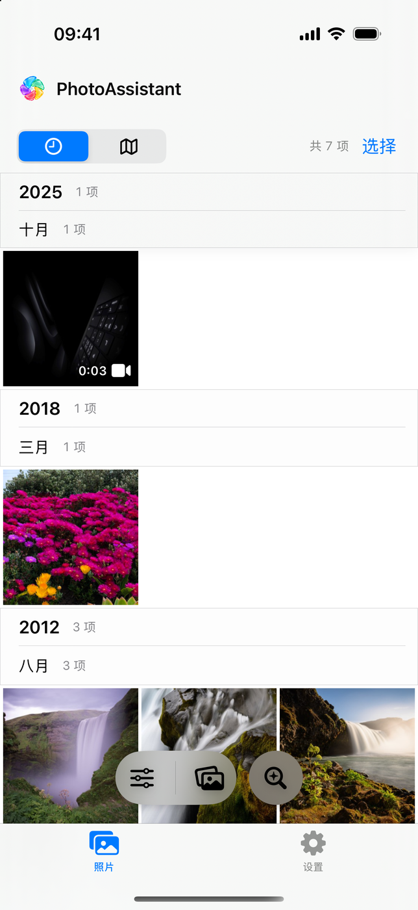

01
照片，落在地图上。Photos, placed on the map.
带位置的照片自动落在地图上，相近的聚成一簇。轻点图钉，重温那一刻；底图样式随心切换。Geotagged photos land on the map and nearby ones cluster together. Tap a pin to relive the moment, and switch base map styles freely.
照片，是一切的起点EVERYTHING STARTS WITH A PHOTO
时间线里翻阅，地图上重逢。
把视频变成实况照片，把行程变成轨迹影片。Browse the timeline, rediscover places on the map.
Turn videos into Live Photos and trips into track movies.
iPhone & iPad · iOS 17+ · 简体中文 / EnglishEnglish / 简体中文

01 / 以照片为中心PHOTO FIRST
打开就是相册。浏览、地图与创作工具，都围绕你的照片展开。Open straight into your library. Browsing, maps and creative tools all revolve around your photos.
带位置的照片自动落在地图上，相近的聚成一簇。轻点图钉，重温那一刻；底图样式随心切换。Geotagged photos land on the map and nearby ones cluster together. Tap a pin to relive the moment, and switch base map styles freely.
按年月分组，捏合切换列数；批量选择、分享与删除一气呵成，排序偏好会被记住。Grouped by year and month, pinch to change columns. Select, share and delete in batches, and your sort preference is remembered.
选一段视频生成实况照片。封面默认取第一帧，可在时间轴上逐帧挑选，支持 HDR 画面。Pick a video and compose a Live Photo. The cover defaults to the first frame, can be chosen frame by frame on the timeline, and supports HDR.
选一趟行程拍摄的照片和视频，按时间在地图上逐个播放，导出 3D 动画视频，保存或分享。Pick photos and videos from one trip, play them on the map in time order, then export a 3D animation video to save or share.
PHOTOASSISTANT / 实际运行IN THE APP
点击截图，查看大图。Select a screenshot to view it full size.
02 / 少一点打扰LESS INTERRUPTION
PhotoAssistant 不上传照片，也不需要账号。照片图库可以只授权「限制访问」，应用只读取你允许的内容。地图由 Apple MapKit 提供，实况照片与轨迹影片都在本地生成。PhotoAssistant never uploads your photos and requires no account. You can grant Limited Access to your photo library, and the app only reads what you allow. Maps come from Apple MapKit; Live Photos and track movies are generated locally.
了解数据如何使用Read about data use ↗关于照片地图、实况照片或轨迹影片，使用指南都在这里。Get help with the photo map, Live Photos and track movies.